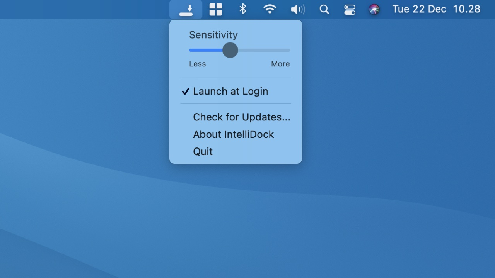

Hides the Dock. Automatically.
IntelliDock hides the Dock when it's overlapped by a window.
Download
IntelliDock hides the Dock when it's overlapped by a window.
Download
Adjust the distance at which the Dock starts to hide itself.
If you think it's useful, hit the button below.
Grid is a window manager that works well with IntelliDock.
Learn more about GridGrid
Other window managers
Why is IntelliDock not on the App Store?
IntelliDock needs to access system API to hide & show the Dock. This prevents it from being available in the App Store.
My window manager app doesn't work well with IntelliDock. What are my options?
You can use Grid as your window manager. It's designed to work well with IntelliDock. See here.
What are the system requirements?
OS X 10.10 and higher.